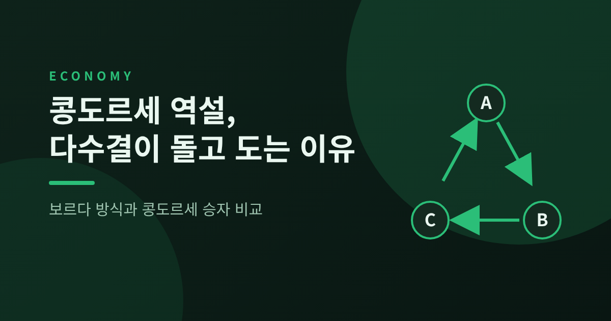
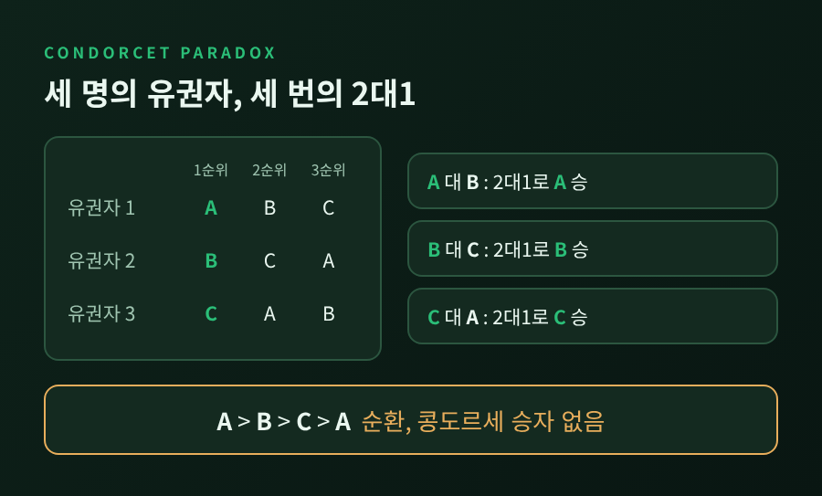
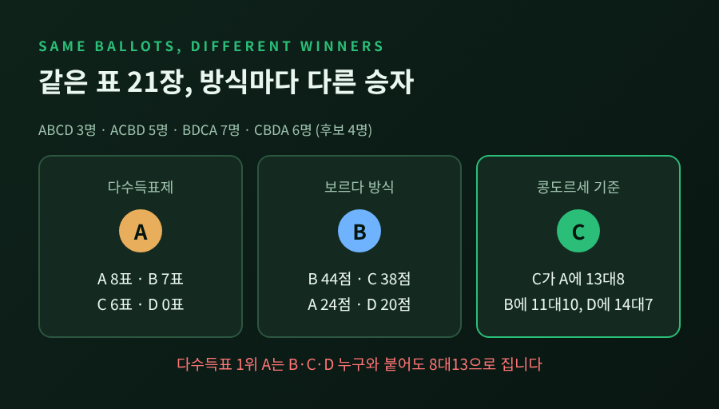
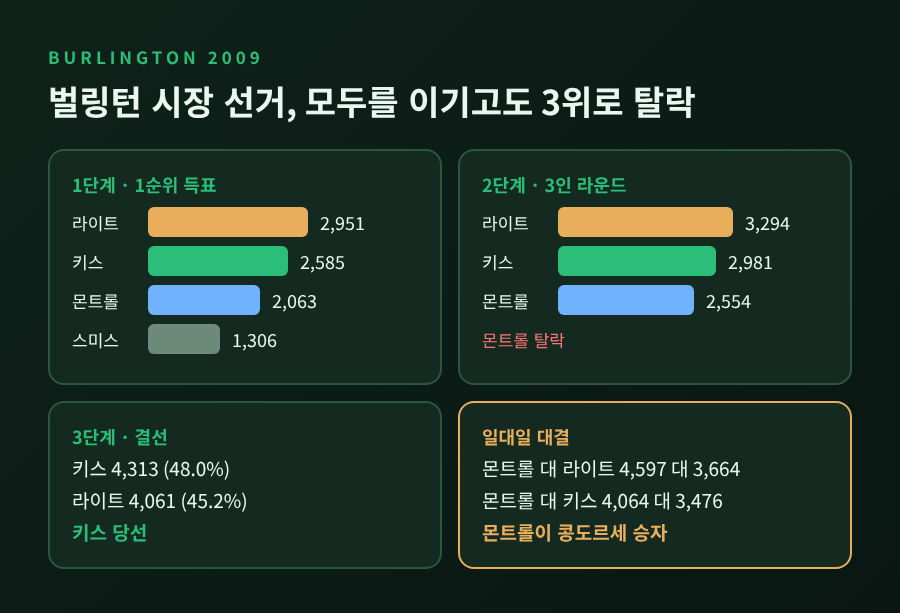
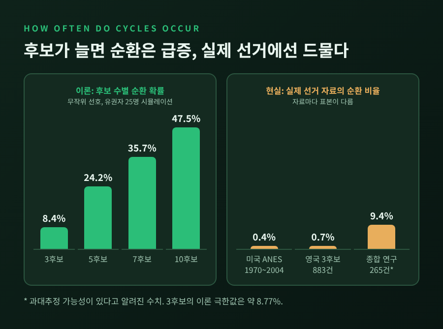
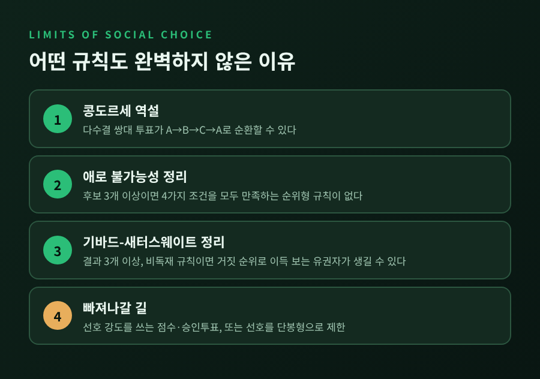

오늘은 콩도르세 역설과 사회적 선택론에 대해 이야기해 보려 합니다.
다수결로 후보를 하나씩 맞붙이면 A가 B를, B가 C를, C가 A를 이기는 순환이 생길 수 있습니다.
이 글에서는 세 후보 예시, 보르다 방식과 콩도르세 승자의 차이, 실제 선거에서의 빈도와 사례를 차례로 정리하겠습니다.
가장 작은 예시부터 보겠습니다. 유권자는 세 명, 후보는 A, B, C입니다.
두 후보씩 짝지어 투표해 보겠습니다.
A와 B는 1번과 3번이 A를 앞에 두므로 2대1로 A가 이깁니다.
B와 C는 1번과 2번이 B를 앞에 두므로 2대1로 B가 이깁니다.
C와 A는 2번과 3번이 C를 앞에 두므로 2대1로 C가 이깁니다.
개인의 순위는 모두 일관됩니다. 그런데 집단의 선호만 돌고 돕니다.
A가 B보다, B가 C보다, C가 A보다 낫다는 결론이 동시에 나오는 셈입니다.
이 순환이 콩도르세 역설입니다.

이 현상은 18세기 후반 프랑스의 콩도르세 후작이 1785년의 논문에서 다룬 것으로 알려져 있습니다.
13세기에 라몬 률이 교회 선거를 연구하며 먼저 발견했지만, 그의 저작은 오랫동안 잊혔다가 21세기에야 다시 조명되었습니다.
모든 상대를 일대일 다수결로 이기는 후보를 콩도르세 승자라고 부릅니다.
반대로 모든 상대에게 지는 후보는 콩도르세 패자입니다.
순환이 생기면 콩도르세 승자는 존재하지 않습니다.
보르다 방식은 다른 길을 택합니다. 후보가 n명이면 1순위에 n-1점, 2순위에 n-2점을 주고, 꼴찌는 0점입니다.
점수를 모두 더해 가장 높은 후보가 당선됩니다.
순위 전체를 반영하므로 1순위 표만 세는 다수득표제보다 정보를 많이 씁니다.
그렇다면 두 방식은 같은 후보를 고를까요. 스탠퍼드 철학 백과사전의 예시가 답을 줍니다.
유권자 21명이 후보 네 명(A, B, C, D)에 순위를 매겼습니다.
3명은 ABCD, 5명은 ACBD, 7명은 BDCA, 6명은 CBDA 순입니다.
같은 표를 놓고 방식에 따라 A, B, C가 각각 승자가 됩니다.
더 눈여겨볼 점은 다수득표제의 승자 A입니다. A는 다른 세 후보 누구와 붙어도 8대13으로 집니다.
1순위 표만 세다가 가장 외면받는 후보를 뽑은 셈입니다.

콩도르세는 이미 1785년에 보르다 방식의 약점을 짚었습니다.
점수를 가장 많이 얻고도 1순위로 뽑은 사람이 한 명도 없을 수 있다는 것입니다.
모든 일대일 다수결을 이긴 후보가 보르다 점수는 최고가 아닐 수도 있고, 경쟁자 순위를 일부러 낮추는 전략 투표에도 취약하다고 보았습니다.
보르다가 조작 우려에 "내 방식은 정직한 사람들만을 위한 것"이라고 답했다는 일화도 전해집니다.
그렇다고 보르다 방식이 사라진 것은 아닙니다.
슬로베니아 국회는 90석 가운데 이탈리아계와 헝가리계 소수민족 2석을 보르다 방식으로 뽑습니다.
MLB 최우수선수상이나 하이즈먼 트로피 같은 투표에서도 쓰입니다.
콩도르세 승자를 놓치는 것은 다수득표제와 보르다 방식만이 아닙니다.
9명의 유권자 예시를 보겠습니다. 2명은 A>B>C, 3명은 B>A>C, 4명은 C>A>B입니다.
1순위 표는 C가 4표로 가장 많습니다. 하지만 A는 B를 6대3, C를 5대4로 이깁니다. A가 콩도르세 승자입니다.
결선투표와 순위선택제(IRV)는 1순위가 가장 적은 A를 먼저 탈락시킵니다. 이어 B가 C를 5대4로 이겨 B가 당선됩니다.
모두에게 이기는 후보가 첫 라운드에서 사라지는 구조입니다.
실제로 이런 일이 있었습니다. 2009년 미국 버몬트주 벌링턴 시장 선거입니다.
그런데 일대일로 붙이면 몬트롤이 라이트를 4,597대 3,664로, 키스를 4,064대 3,476으로 앞섭니다.
몬트롤이 콩도르세 승자였던 셈입니다. 그는 개표에서는 3위로 떨어졌습니다.
이 선거 이후 2010년 시민발의로 순위선택제는 3,972대 3,669, 약 52%대 48%로 폐지되었습니다.

다만 반론도 있습니다. 순위선택제를 옹호하는 FairVote는 이렇게 지적합니다.
콩도르세 기준은 다수득표제, 보르다, 승인투표, 점수투표도 만족하지 못하므로 순위선택제만의 흠이 아니라는 것입니다.
콩도르세 승자는 본질적으로 중도적이어서 '가장 덜 싫은' 후보일 수 있고, 몬트롤은 1순위 지지가 약했다는 점도 들었습니다.
옹호 단체의 시각이라는 점은 감안하고 읽으시길 권합니다.
역설이 이론에만 머문다면 걱정할 이유가 없습니다. 확률을 보겠습니다.
모든 순위가 무작위로 나온다고 가정한 모형에서, 후보 세 명이면 유권자가 늘수록 순환 확률은 약 8.77%에 수렴합니다.
유권자 3명일 때 5.556%, 101명일 때 8.690%, 601명일 때 8.760%입니다.
다른 논문의 계산에서도 콩도르세 승자가 존재할 확률이 0.9123이므로, 순환은 약 8.8%로 일치합니다.
후보가 늘면 확률은 급격히 커집니다. 같은 가정에서 4후보는 승자가 없을 확률이 약 17.6%, 10후보는 승자 존재 확률이 0.5113까지 내려갑니다.
유권자 25명을 시뮬레이션하면 3후보 8.4%, 5후보 24.2%, 10후보 47.5%가 나옵니다.
예전엔 순환을 먼 이론의 이야기로 여기기 쉬웠습니다. 지금은 후보가 많은 모임에서는 제법 흔할 수 있다는 계산이 나와 있습니다.
다만 실제 대규모 선거는 이야기가 다릅니다.
그 한 건이 2021년 미니애폴리스 2선거구입니다.
아랍이 곤을 4,324대 4,098로, 곤이 월로바를 3,708대 3,635로, 월로바가 아랍을 4,056대 4,037로 이겼습니다.
가장 근소한 한 쌍은 19표 차에 불과했습니다. 순위선택제로는 월로바가 당선되었고, 보르다 점수로는 아랍이 1위였습니다.

후보가 좌우 한 줄 위에 놓이는 단봉형 선호라면, 중위투표자 정리에 따라 순환이 생기지 않습니다.
현실의 선호가 이 모형에 가까울수록 순환은 드물어질 것입니다.
어떤 규칙을 쓰든 문제가 사라지지 않는다는 점은 이론이 이미 보여주었습니다. 간단히만 짚겠습니다.
애로 불가능성 정리는 후보가 세 명 이상일 때 네 가지 조건을 한꺼번에 만족하는 순위형 규칙이 없다고 말합니다.
조건은 모든 선호 조합 허용, 독재자 없음, 만장일치 존중, 무관한 대안으로부터의 독립입니다.
콩도르세 역설은 이 정리를 예고한 사례로 읽힙니다.
기바드-새터스웨이트 정리는 한 걸음 더 나갑니다.
결과가 세 가지 이상이고 독재가 아닌 순위형 규칙이라면, 거짓으로 순위를 적어 이득을 보는 유권자가 생길 수 있다는 내용입니다. 기바드가 1973년, 새터스웨이트가 1975년에 증명했습니다.
빠져나갈 길도 알려져 있습니다. 점수투표나 승인투표처럼 선호의 강도를 쓰면 애로 정리가 적용되지 않습니다.
선호를 단봉형으로 제한하는 길도 있습니다. 모두 다른 약점과 맞바꾸는 선택입니다.

콩도르세 방식에는 코플랜드, 케메니, 미니맥스, 랭크드 페어, 슐츠 방식 등이 있습니다.
모두 콩도르세 승자가 있으면 그를 뽑고, 순환이 생기면 각자의 규칙으로 풀어냅니다.
데비안과 젠투 재단, 쿠버네티스 커뮤니티가 슐츠 방식을 씁니다. 위키미디어 재단도 2013년까지 이사 선거에 슐츠 방식을 썼습니다.
다만 정부 선거에서 콩도르세 방식을 쓰는 곳은 알려진 바 없다고 합니다.
한국 대통령 선거는 한 번의 투표로 1위가 당선되는 상대다수제입니다. 1987년에는 노태우 후보가 36.6%로 당선되었고, 김영삼 28.0%, 김대중 27.0%였습니다.
이 득표율만으로 당시 일대일 선호를 알 수는 없습니다. 누가 콩도르세 승자였는지는 확인되지 않습니다.
다만 1위 득표율이 낮을수록 1순위 표만으로는 다수의 뜻을 읽기 어렵다는 점은 분명합니다.
실무적으로 얻을 수 있는 교훈은 세 가지입니다.
정리하면 이렇습니다.
다수결은 두 후보 사이에서는 믿을 만하지만, 세 후보 이상에서는 투표 방식이 결과를 만듭니다.
"누가 이겼는가"는 어떤 규칙으로 세었는가와 떼어놓고 말할 수 없습니다.
콩도르세 방식이 정답이라고 말씀드리지는 않겠습니다. 순위선택제를 옹호하는 쪽의 반론에도 일리가 있습니다.
다만 같은 표로 세 명의 다른 승자가 나올 수 있다는 사실을 알고 투표장에 가는 일과 모르고 가는 일은 다릅니다.
다음에 다수결로 무언가를 정하게 된다면, 먼저 세는 방법부터 물어보시길 권합니다.